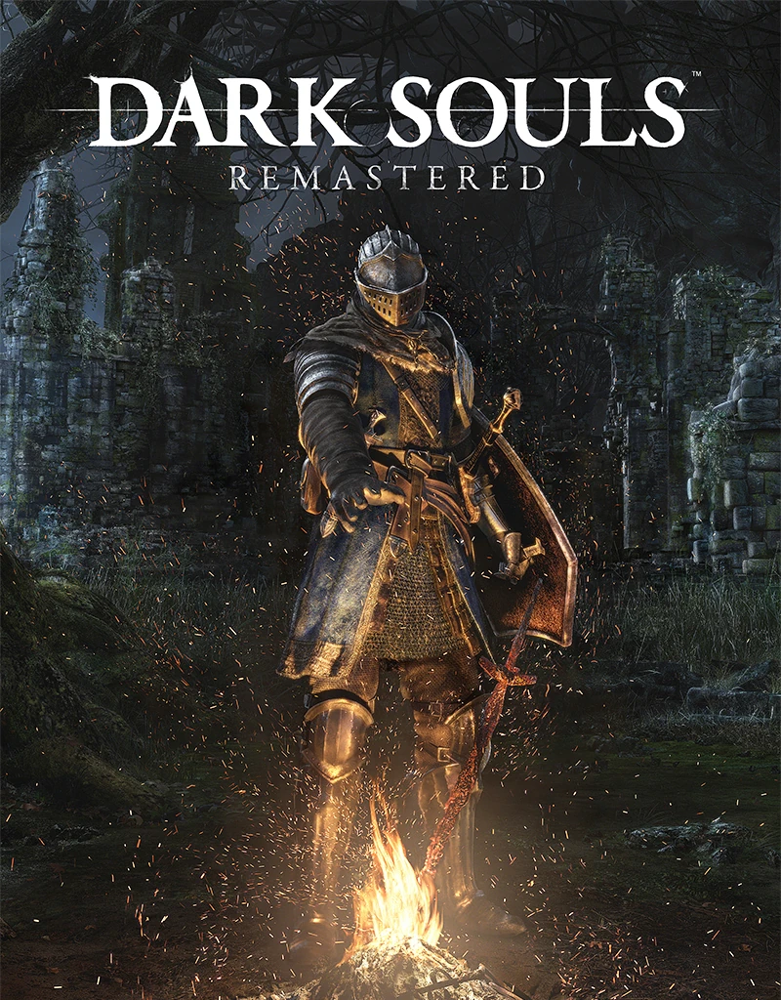
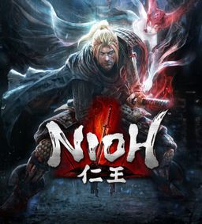
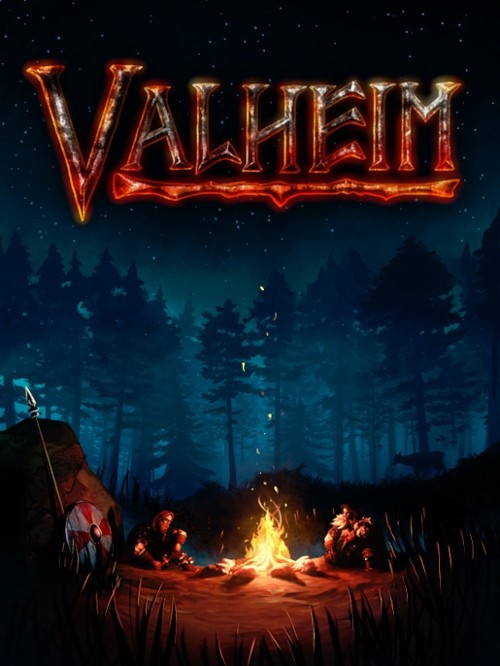
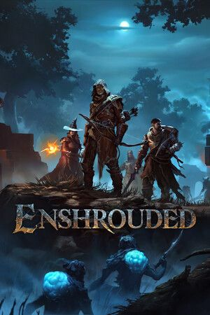
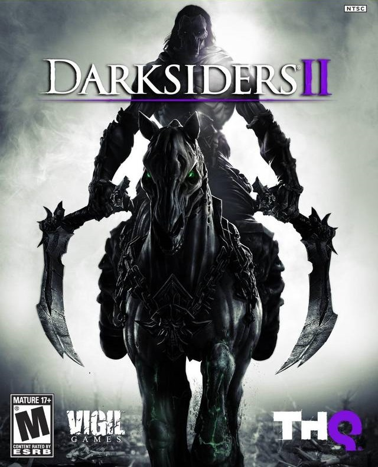
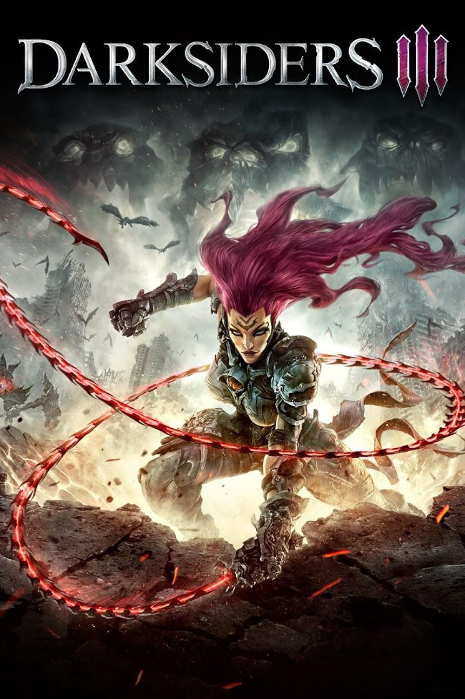

Popularne Gry

Dark Souls Remastered
Mroczne RPG akcji stworzone przez FromSoftware.
Gra oferuje wymagające walki, potężnych bossów
oraz ogromny świat fantasy pełen tajemnic.

Dark Souls 2 Scholar of the First Sin
Rozbudowana odsłona serii Dark Souls z nowymi
przeciwnikami, wymagającymi lokacjami i
klimatycznym światem pełnym niebezpieczeństw.

Dark Souls 3 The Ringed City
Dynamiczny souls-like z epickimi walkami,
mrocznym klimatem oraz jednymi z najlepszych
bossów w całej serii.

Elden Ring Shadow of the Erdtree
Ogromne RPG akcji z otwartym światem,
eksploracją, magią i wymagającymi przeciwnikami.

Bloodborne
Gotycki horror akcji z szybką walką,
mroczną atmosferą i przerażającymi bestiami.

Lord of the Fallen 2023
Mroczny souls-like z dwoma światami:
krainą żywych i umarłych pełną potworów.

Hellpoint
Futurystyczny souls-like science fiction
z eksploracją kosmicznej stacji i horroru.

Nioh
Samurajskie RPG akcji z demonami Yokai,
dynamiczną walką i rozbudowanym ekwipunkiem.

Nioh 2
Jeszcze bardziej dynamiczna odsłona Nioh
z nowymi mocami demonów i bossami.

Lies of P
Mroczna interpretacja historii Pinokia
w klimacie steampunkowego souls-like.

Wo Long Fallen Dynasty
Chińskie fantasy inspirowane historią Trzech Królestw
z szybką i widowiskową walką.

Horizon Zero Dawn
RPG akcji z otwartym światem, robotycznymi bestiami
i futurystycznym klimatem postapokalipsy.

Dragon's Dogma Dark Arisen
Klasyczne RPG fantasy z ogromnym światem,
smokami oraz widowiskową walką.

Monster Hunter World: Iceborne
Polowanie na gigantyczne potwory,
crafting oraz kooperacyjna rozgrywka online.

Clair Obscur: Expedition 33
Stylowe RPG fantasy z tajemniczą historią,
eksploracją i wymagającymi przeciwnikami.

Valheim
Survival w świecie Wikingów z budowaniem,
craftingiem oraz walką z bossami.

Enshrouded
Fantasy survival RPG z eksploracją,
budowaniem baz i magicznym światem.

Lord of the Fallen
Klasyczny mroczny action RPG z trudnymi walkami
i gotycką atmosferą fantasy.

The Surge 2
Futurystyczny souls-like science fiction
z brutalną walką i cybernetycznymi przeciwnikami.

Enotria: The Last Song
Włoski souls-like inspirowany folklorem
i klimatem renesansowej Italii.

DarksidersII
Dynamiczne RPG akcji z apokaliptycznym światem,
zagadkami oraz walką wręcz.

DarksidersIII
Mroczna kontynuacja Darksiders z otwartym światem
i dynamiczną walką jako Fury.

Remnant: From the Ashes
Shooter souls-like z kooperacją,
proceduralnymi lokacjami i potężnymi bossami.

The Surge
Brutalny science fiction souls-like
z walką wręcz oraz cybernetycznymi implantami.